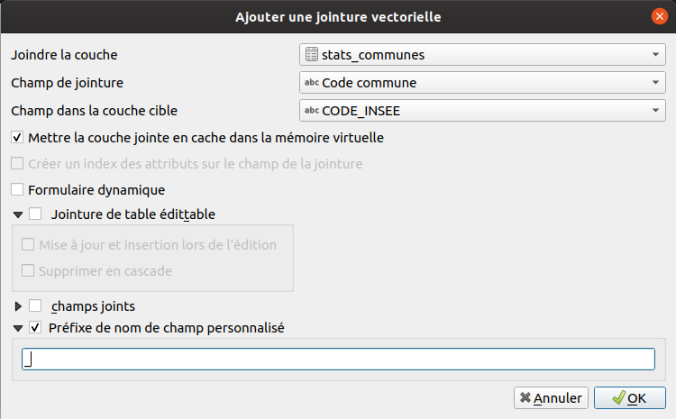

Table of content
Faire une jointure attributaire
Il est courant d'avoir une couche spatiale et d'avoir un autre fichier type tableur avec des informations complémentaires à propos de cette couche spatiale. Nous souhaiterions donc ajouter ces informations du tableur à notre couche spatiale.
Lien vers la documentation : https://docs.qgis.org/3.10/fr/docs/user_manual/working_with_vector/vector_properties.html#joins-properties
Les étapes :
- Préparer un fichier tableur "simple" avec les entêtes des colonnes et les données.
- Pas d'autres entêtes ou autre texte.
- Il peut y avoir plusieurs feuilles, QGIS permet de choisir la feuille.
- Charger la table dans QGIS :
- Si fichier CSV :
- à l'aide de l'outil
Texte délimitédans legestionnaire des sources de données
- à l'aide de l'outil
- Si fichier ODS, XLS :
- à l'aide du panneau explorateur
- ou à l'aide de l'outil
Vecteur(même si il s'agit d'une table, sans géométrie) dans legestionnaire des sources de données
- Si fichier CSV :
- Vérifier qu'il existe bien un champ commun aux deux couches avant de faire la jointure et qu'il peut y avoir une correspondance.
- Si ce n'est pas le cas, faire les modifications nécessaires à l'aide de la calculatrice de champ.
- Se rendre dans les propriétés de la couche vecteur "parente" dans l'onglet
jointure. - Ajouter une nouvelle jointure :

- Afin de conserver définitivement ces données supplémentaires dans la table attributaire, on peut exporter la table (clic droit sur la couche, puis exporter). Lire la page sur les projections pour voir comment exporter.
Note, afin de conserver ces champs qui peuvent être très long, on peut utiliser un geopackage.